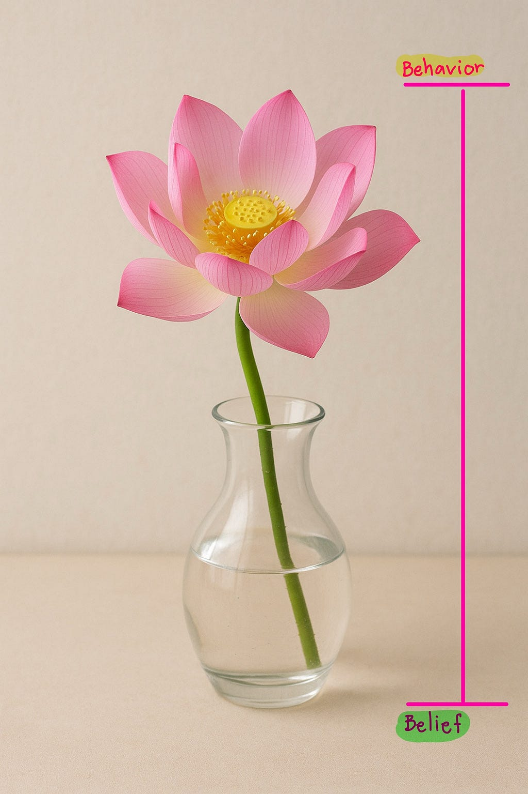

Belief vs Behavior : How?
Belief vs Behavior : How?
เมื่อความเชื่อขัดแย้งกับการกระทำ : เราจัดการอย่างไร?

“Beliefs drive behaviors”
ความเชื่อเป็นสิ่งที่อยู่เบื้องหลังพฤติกรรม เรา เชื่ออย่างไร เราก็จะ ทำอย่างนั้น
เคยไหมคะ ความเชื่อและพฤติกรรมขัดแย้งกัน จนเกิดความขัดแย้งในใจเราเอง
.
.
ทุกคนจำนิทานเรื่อง “สุนัขจิ้งจอกกับองุ่นเปรี้ยว” ได้ไหมคะ
….เจ้าสุนัขจิ้งจอกกระโดดเพื่อที่จะกัดพวงองุ่นบนต้น ด้วยความเชื่อที่ว่าองุ่นต้องหวานอร่อย แต่หลังจากที่มันพยายามกระโดดครั้งแล้วครั้งเล่า ก็ไม่สูงพอที่จะกัดพวงองุ่นบนต้นได้ สุดท้ายมันเหนื่อย มันท้อ มันล้า มันจึงรำพึงกับตนเองว่า “องุ่นต้นนี้ต้องเปรี้ยวแน่ๆ” แล้วก็เดินจากไปอย่างไม่เสียดาย
และในชีวิตจริงที่ไม่ใช่นิทาน เราก็น่าจะได้พบเจอกับคนที่มีพฤติกรรมการแสดงออกแบบที่เรียกได้ว่า “สุนัขจิ้งจอกกับองุ่นเปรี้ยว” ใช่ไหมคะ
และตัวเราเองก็มีบ้างเช่นกัน ที่อาจจะเคยถามตัวเองว่า “เอ๊ะ นี่เรากำลังมีคิดว่าองุ่นเปรี้ยวอยู่หรือป่าว” หลังจากที่เรามีพฤติกรรม หรือความเชื่อแปลกๆ ที่คิดเข้าข้างตัวเองแบบแปร่งๆ (อันนี้ประสบการณ์จริงของผู้เขียนเองค่ะ)
ทำไมจึงเป็นแบบนั้น? เรื่องนี้มีทฤษฎีอ้างอิงอยู่ค่ะ
Cognitive Dissonance Theory — โดย Leon Festinger (ในปี 1957)
เมื่อบุคคลมีความขัดแย้งระหว่างความเชื่อ (Belief), ค่านิยม (Values) หรือ ความรู้ (Knowledge) กับพฤติกรรมของตน จะเกิด ความขัดแย้งภายในใจ (Cognitive Dissonance) ซึ่งอาจทำให้รู้สึกไม่สบายใจ และจิตใจจะพยายาม “แก้” ความขัดแย้งนั้น โดยการปรับพฤติกรรมให้ตรงกับความเชื่อ หรือปรับความเชื่อให้ตรงกับพฤติกรรม
ตอนนี้เราได้รู้จัก Cognitive Dissonance Theory กันแล้ว จากนี้ถ้าเรารู้สึกไม่สบายใจ อยากชวนมาสังเกตุกันค่ะ ว่าความเชื่อ และพฤติกรรมของเรา ยังสอดคล้องเข้าขากันดีอยู่ไหม สิ่งที่เราทำในตอนนี้ สะท้อนสิ่งที่เราเชื่ออยู่ใช่ไหม
ความรู้ชุดนี้เราได้มาจากคลาสของศาสตราจารย์ ดร.มณีวรรณ ฉัตรอุทัยค่ะ
ขอขอบคุณอาจารย์ที่ให้ความรู้กับศิษย์ได้มาแบ่งปันเป็นบทความค่ะ
ขอให้ทุกท่านสนุกกับการอ่านค่ะ